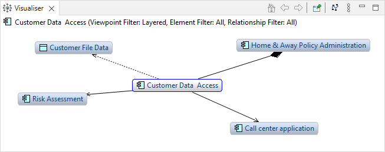
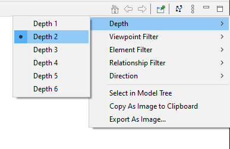

可视化分析窗口以图形方式显示所选模型概念及其与其他模型概念的所有关系。 它是导航器的图形等价物。 在模型树、导航器或图表视图中选择元素或关系将更新可视化工具中的选择。
可视化分析窗口
要使用可视化分析器，请在模型树、导航器或视图中选择任何元素或关系。可视化工具将更新以反映当前选择。可视化分析器突出显示选定的概念并显示所有关系和任何连接的元素。 双击连接的元素之一允许您“进入”元素，使其成为焦点中心概念，并显示其所有关系和连接概念。 您还可以从 Visualiser 窗口的工具栏中“进入”一个元素，也可以选择“返回”返回到上一个元素。 选择工具栏上的“主页”以返回第一个选定的概念。
可视化分析器将显示所选概念的连接概念，默认深度为一级（立即连接）。 要更改计算连接距离的深度级别，请从可视化分析窗口的下拉菜单中选择深度级别：
可视化分析器深度菜单
您可以从“视点过滤器”菜单过滤可视化分析器中显示的元素。这将仅显示给定视点中允许的那些元素。要查看所有元素，请选择“无”视点。有关详细信息，请参阅 视点 部分。
您可以从“元素过滤器”菜单过滤可视化分析器中显示的元素类型。这将仅显示选定的元素类型。要查看所有元素类型，请选择“全部”选项。
您可以从“关系过滤器”菜单过滤可视化分析器中显示的关系。这将仅显示选定的关系类型。要查看所有关系类型，请选择“全部”选项。
此菜单项允许您设置是否显示关系传入和传出关系及其连接元素。选项为“两者”、“传入”和“传出”。 “传入”显示所有传入关系，“传出”显示传出关系，而“两者”显示传入和传出关系。 这类似于 导航器 中的功能。
第一次显示在可视化分析器窗口中时，它使用默认布局进行布局。 如果您想重新布局，可以按可视化分析器窗口工具栏上的“布局”按钮。
您可以将可视化分析器的内容作为图像保存到文件中，或者从上下文菜单中将图像复制到系统剪贴板。